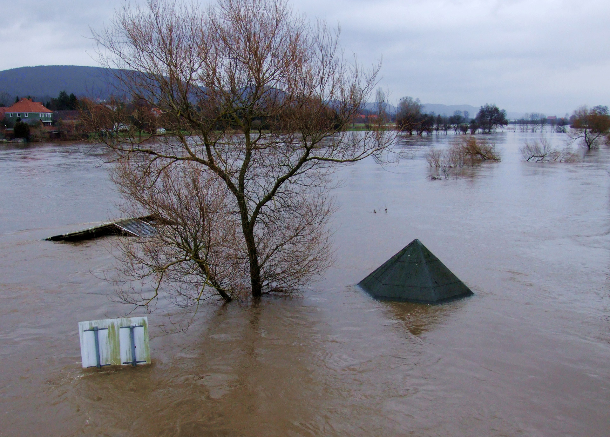

Welcome to the Team A-2 Natural Disaster Knowledge Hub! Here you will learn about how natural disasters have impacts on people and economies, while also understanding connections between climate change and natural disasters. Data visualizations will help you understand the magnitude of disaster impacts and trends across time. We start with information about disaster occurrences over time, and compare these trends to changes in world temperature. Next, we examine the human toll of disaster, with a focus on fatalities. Then we turn our attention to economic impacts. Finally, we return to a climate change perspective to understand how people interpret risk.
We hope you will enjoy exploring our page and learning about the effects of natural disasters!

A project of the Code 4 Policy class at the John F. Kennedy School of Government, Harvard University, 2019.